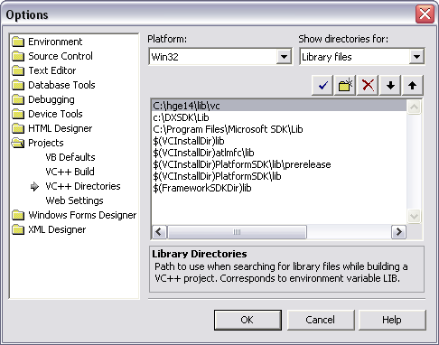
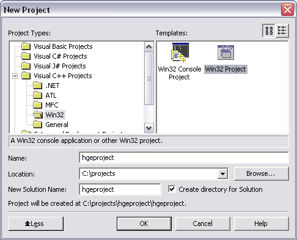
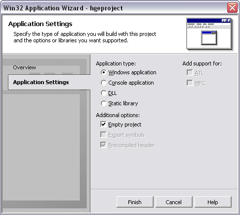
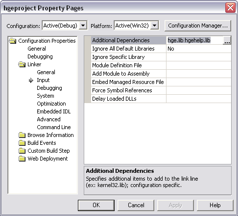

Visual Studio .NET
1. Установка путей к библиотекам и путям
Откройте Tools->Options->Projects->VC++ Directories, добавьте путь до HGE
директории "include" и передвиньте на верх:
На той же закладке выберите Library files из выпадающего списка Show directories for,
и добавьте путь к HGE директории "lib\vc" и передвиньте ее наверх:

Нажмите OK.
Теперь можно использовать HGE в ваших проектах без указания ее точного местоположения. Этот
шаг нужно сделать только один раз, для всех проектов.
2. Создание пустого проекта Win32 Application
Откройте закладку File->New...->Projects, выберите Win32 Project, укажите
Project name и Location:

Нажмите OK.
На следующем экране выберите Application Settings.
Удостоверьтесь, что в группе Application Type выбрано Windows Application. Теперь
поставьте галочку Empty project в группе Additional Options или оставьте пустой, если
хотите чтобы была создана простой проект:

Нажмите Finish. Вуаля! Теперь у вас создан проект.
3. Add libraries to the project
Откройте Project->Properties...->Linker->Input и добавьте в Additional Dependencies
следующие библиотеки:
- hge.lib - библиотека импорта для DLL системного слоя HGE
- hgehelp.lib - библиотека вспомогательных классов HGE
Если вы не вызываете никакие функции Windows, то эти две библиотеки - все что нужно для
проекта.

Затем выберите Release из выподающего списка Configuration и повторите операцию.
Нажмите OK.
4. Начинайте писать код!
Включите заголовок hge.h для доступа к функциям HGE. Смотрите секцию
Примеры простыми примерами кода.
|